I am a systems thinker and an impact-driven
software engineer with over a decade at Google building and optimizing large-scale
ML systems. I'm endlessly curious about how the world works at
every level — from physics to the social sciences — and I love understanding how
the pieces connect rather than seeing them in isolation.
Above all, I'm a mentor at heart: I get real joy from helping
others grow. I care about scaling impact not just through code, but by leading
cross-functional initiatives, mentoring engineers, and fostering collaborative,
efficiency-focused engineering cultures.
Goal
To understand intelligence and the nature of the universe.
Technical focus
ML Compilers
ML Frameworks
ML Accelerators Programming
ML Infrastructure
ML Performance Optimization
Recommendation Systems
Large-Scale Distributed Systems
Database Systems
Currently building
ML Systems Papers
— a structured, searchable index of machine-learning systems research, organized by
optimization principle, domain, and technique rather than by date.
Reading
Two curated shelves from the
books I've read on Goodreads,
ordered roughly from the ideas closest to my curiosity about intelligence down to
everyday favorites. A Review tag means I wrote
notes — click any cover to read them.
Transformational — books that reshaped how I think
Insightful — memorable reads worth recommending
Also recommended — other 4- and 5-star reads
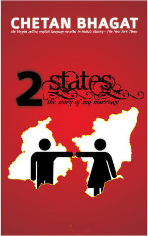
2 StatesChetan Bhagat
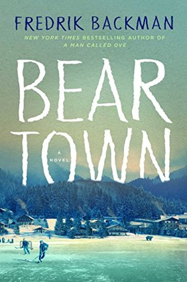
Beartown (Beartown, #1)Fredrik Backman
रश्मिरथीRamdhari Singh 'Dinkar'
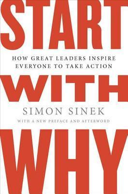
Start with WhySimon Sinek
SapiensYuval Noah Harari
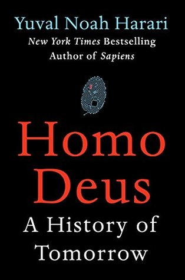
Homo DeusYuval Noah Harari
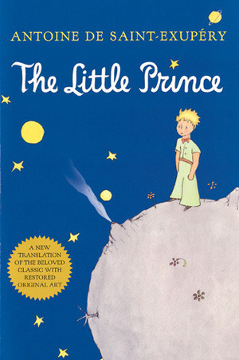
The Little PrinceAntoine de Saint-Exupéry
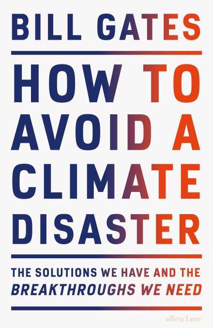
How to Avoid a Climate DisasterBill Gates
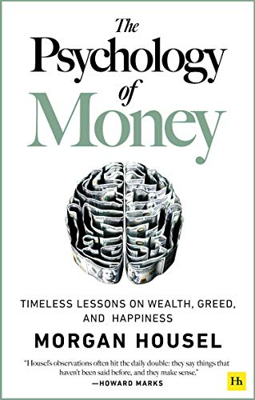
The Psychology of MoneyMorgan Housel
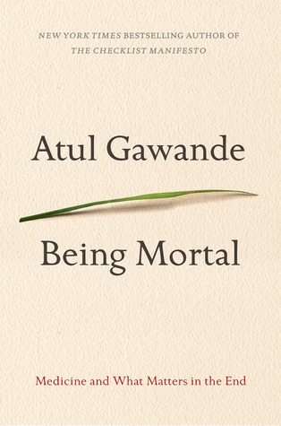
Being MortalAtul Gawande
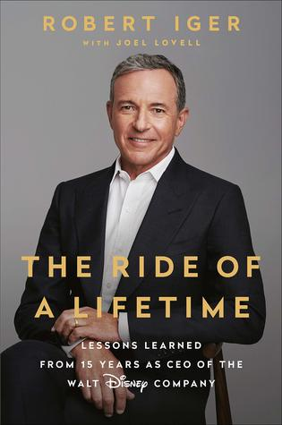
The Ride of a LifetimeRobert Iger
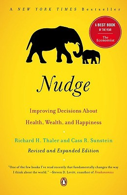
NudgeRichard H. Thaler
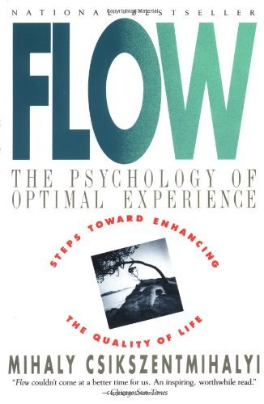
FlowMihály Csíkszentmihályi
The Weapon WizardsYaakov Katz
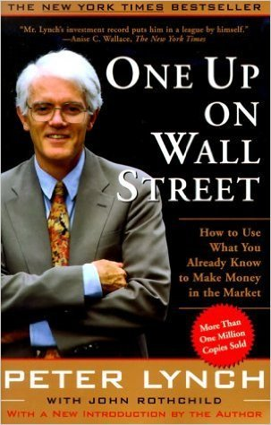
One Up On Wall StreetPeter Lynch
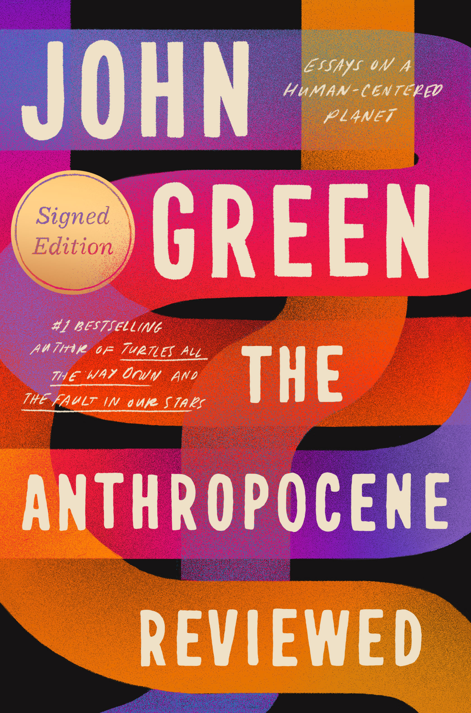
The Anthropocene ReviewedJohn Green
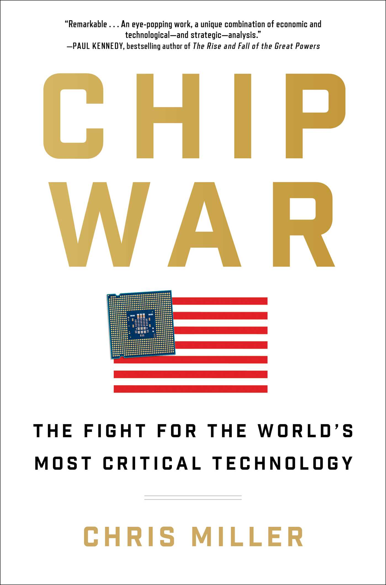
Chip WarChris Miller
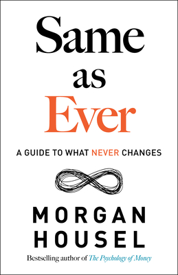
Same as EverMorgan Housel
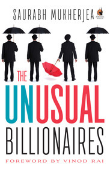
The Unusual BillionairesSaurabh Mukherjea
The AnarchyWilliam Dalrymple
Fire & Blood (A Targaryen History, #1)George R.R. Martin
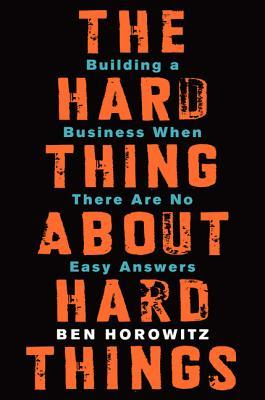
The Hard Thing About Hard ThingsBen Horowitz
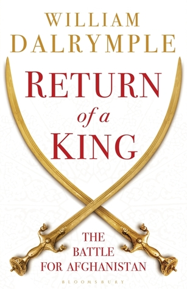
Return of a KingWilliam Dalrymple
Us Against You (Beartown, #2)Fredrik Backman
You are the Best WifeAjay K. Pandey
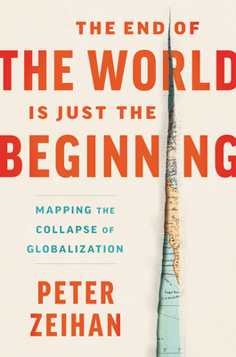
The End of the World Is Just the BeginningPeter Zeihan
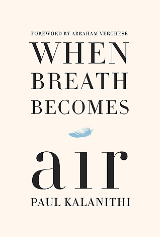
When Breath Becomes AirPaul Kalanithi
It Ends with Us (It Ends with Us, #1)Colleen Hoover
The Seven Principles for Making Marriage WorkJohn M. Gottman
Shoe DogPhil Knight
LifespanDavid A. Sinclair
The Wizard and the ProphetCharles C. Mann
The Obstacle Is the WayRyan Holiday
Seven Brief Lessons on PhysicsCarlo Rovelli
The Mental LoadEmma
Age of AmbitionEvan Osnos
चित्रलेखा (Chitralekha)Bhagwaticharan Verma
Politics and the English LanguageGeorge Orwell
A Thousand BrainsJeff Hawkins
The Happiness HypothesisJonathan Haidt
The StrangerAlbert Camus
21 Lessons for the 21st CenturyYuval Noah Harari
PrinciplesRay Dalio
The ProphetKahlil Gibran
How to Win Friends & Influence PeopleDale Carnegie
The Elephant in the BrainKevin Simler
The Art of LovingErich Fromm
Extreme OwnershipJocko Willink
DebtDavid Graeber
The Man Who Divided IndiaRafiq Zakaria
The CodeMargaret O'Mara
LyingSam Harris
Blog
Nothing here yet — writing in progress.
I'm planning to write about ML systems efficiency, performance, and lessons from
building at scale. Check back soon, or reach me by
email in the meantime.
★★★★★
"If a picture is worth a thousand words then a metaphor is worth a thousand pictures."
Absolutely mind blowing. This book gives a new way of understanding concepts and considerably changes how I feel, experience, understand art and rituals, think, and communicate with others as well as myself.
Metaphors are usually considered devices for poetic imagination and rhetorical flourish — not a necessary part of ordinary language. However, as this book demonstrates, metaphors are pervasive and aren't limited to literature. They affect how we think, conceptualize, and act. The author develops a framework for different types of metaphors (structural, ontological, orientational) and shows how we use sensory-motor domains from experience to draw inferences in new domains.
The best part is the discussion on the myths of objectivism and subjectivism. The book offers an alternative — experientialism — which combines the two by using metaphoric concepts for subjectivity while understanding the metaphors objectively.
Key takeaway: depending on the choice of metaphor, it can highlight particular aspects of a concept while completely hiding others. The choice matters a lot and can lead to entirely different conclusions.
I wasn't expecting this to be a transformational book, but it was one of the best I've read recently. The author grew up in South Korea in the 60s and 70s when it was still developing — descriptions that felt relatable to growing up in a small town of India in the 90s, post economic liberalization.
The book describes how economies generally develop, using the history of Britain, the US, the Four Asian Tigers, and currently developing countries. It cleared up my misunderstanding of how the US developed and how China has been developing. Key takeaways, applicable well beyond economics:
Long-term ambitious goals require strategic planning and investment, even at a huge loss for decades — the way Toyota and Hyundai kept breaking into markets despite being a running joke early on.
It is really difficult to separate cause and effect from correlation.
It is easy to build any narrative by cherry-picking data and constructing a theory to explain the situation.
Expert opinions should be examined carefully in soft sciences like economics — especially when they don't present downsides and counterexamples.
The author keeps a balanced view, clearly demonstrating the downsides of any opinion taken to the extreme.
"Life is negotiation: The majority of the interactions we have at work and at home are negotiations that boil down to the expression of a simple, animalistic urge: I want."
This book is a masterpiece in communication. I had a misconception that communication is mainly about how to deliver a message effectively. However, this book shows that the major part of communication is about listening and making the other person feel heard. Once that is achieved, you both could reach the desired state.
The author was the FBI's chief international hostage and kidnapping negotiator for 24 years. In each chapter, he walks through a hostage situation his team handled — the techniques are fundamental and widely applicable in day-to-day situations:
Active listening: the person speaking is revealing information, and a trained listener can direct the conversation. Be patient, be comfortable with silence, and let the other person fill it.
Empathy: feeling and labeling the other person's pain even when they don't vocalize it.
Safety & autonomy: allowing the other person to say "No" makes it safe. "No" is better than a false "Yes."
Being suggestive: softening words like "perhaps" and "it seems" take the aggression out of a conversation.
Open-ended questioning: questions starting with "what" and "how" get the other person to solve your issues.
All these are very powerful, and like anything powerful this has a huge negative side — using them inappropriately is manipulation. This was such an eye-opening read.
"The person across the table is never the problem. The unsolved issue is. So focus on the issue."
"If scientists don't play god, who will?" — James Watson
It may look like a biography from the cover, but it's much more. It's about CRISPR — the gene-editing technology that won the 2020 Nobel Prize in Chemistry — and the 10+ researchers whose work led to the breakthrough, full of encouragement, sacrifice, cooperation, rivalry, and patent battles.
Gene editing could eradicate diseases like Huntington's, cure some cancers, produce "designer babies," or even revive extinct species — but like any powerful technology it carries huge risks: unintended consequences, a new dimension of inequality, biological warfare.
My major criticism: the book leaves the impression that DNA is a silver bullet and skips epigenetics. Even the "warrior gene" (MAO-A) only raises the likelihood of aggression given severe childhood abuse. Humans inherit not just genes but environment — knowledge, traditions, technology — and it's the combination that decides the outcome. People don't live up to their genetic potential; the right environment can unlock it without any editing. Still, Isaacson makes a deeply technical, controversial subject a gripping read, presenting all sides objectively.
Being a story junkie, I'm always fascinated by how great authors and screenwriters create realistic, compelling characters — Mahabharata, Game of Thrones. This book uses neuroscience, psychology, and evolution to explain the art of story writing, and it changed what I get out of reading novels and watching movies.
Some elements of a great story also make life interesting: goal-directedness, understanding the core beliefs we hold, and evolving them through experience. Goal direction gives a story its tension — words like "do," "want," and "need" appear twice as often in bestsellers, mirroring how the pursuit of meaningful goals provides much of life's happiness.
Good stories also require a protagonist whose strong but flawed belief, formed by early experience, leads them into crisis and forces them to question who they really are. As they move away from that belief it first makes things worse — but they must make the difficult choice to evolve. Similarly, life requires understanding the self and updating outdated beliefs, even when it's very challenging.
Before industrialization, religion provided emotional education — ethics, meaning, community, purpose, how to live. As its role declined, nothing replaced it; despite economic growth and individual freedom, people aren't happier. This book attempts to address that — not by returning to conservative ideas, but by better understanding our emotions and others', using logic to interpret them and set better expectations (echoes of Stoicism and Buddhism's four noble truths).
Two themes run throughout:
We have a wrong idea of what's "normal." Everyone is more compulsive, anxious, tender, mean, and at sea than we assume — an average couple has 30–50 significant arguments a year.
As Aristotle said, "Give me a child until he is 7 and I will show you the man." Childhood experience largely defines our adult emotional life; understanding that helps us interpret and regulate our thoughts and actions.
A favorite insight: interpret people's weaknesses as the inevitable downside of the merits that drew us to them — the shadow side of things that are genuinely good about them. An enlightening read I took detailed notes on and plan to revisit.
Such a fascinating read that I wanted to get through it without stopping — yet so overwhelming and moving at times that I had to take breaks. It shows what actually goes on in a therapy session and the psychology theories behind it, full of wisdom about the human psyche, relationships, and life's hardest events.
What sets it apart is that the author is a professional writer (she worked on Friends and ER), so it reads as an interesting nonlinear narrative full of foreshadowing that connects dots in unexpected ways.
Key takeaways:
It can be tremendously useful to talk to someone even when you think you know the cause and the solution.
Highly obnoxious behavior often traces back to early tragedy or poor choices — findable with curiosity, kindness, and imagination, and workable.
~10% of people seek therapy while 25%+ in the US are on psychiatric drugs. People reach for quick fixes, but therapy often helps more and addresses root causes.
"A 2020 World Economic Forum report on gender gaps placed India in the bottom five countries of the world, with Pakistan, Syria, Yemen and Iraq."
A really moving, insightful, and brilliant read — clearly one of the best I've read. Don't judge it by the cover: it isn't really about Shah Rukh Khan or lonely women in the literal sense. At its core it's about Indian women's desire to be treated with dignity and fairness, and the grim reality they face.
It follows ten diverse women — from one of the poorest areas in the world in the Jharkhand jungles to Lutyens' Delhi — whose lives look nothing alike from the outside yet face eerily similar issues. One girl got slapped for watching a movie; others worked extra to watch one in secret. Having watched a movie every Friday in high school, this hit home and showed how privileged my childhood was.
The author brilliantly connects economic data with personal stories through the lens of economics, history, and philosophy — and stays honest, never letting her strong opinions hide the full picture.
 SapiensYuval Noah Harari
SapiensYuval Noah Harari The StrangerAlbert Camus
The StrangerAlbert Camus